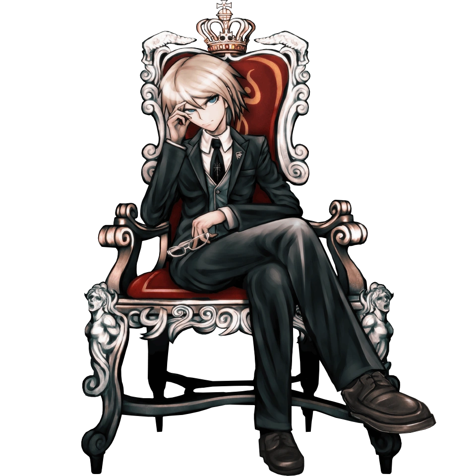

Danganronpa 1 FanWiki
Esta wiki es un proyecto no-oficial que recopila información sobre los personajes del juego Danganronpa: Trigger Happy Havoc.
Los datos de esta wiki proceden de Danganronpa Fandom.
Puedes ver cómo los usamos en Sobre los datos.
Presentación del juego
Si no puedes reproducir el vídeo, míralo en YouTube